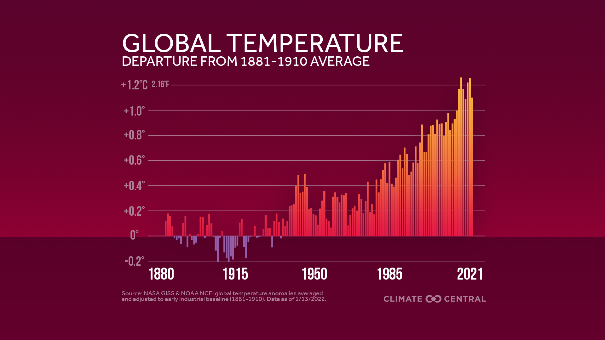
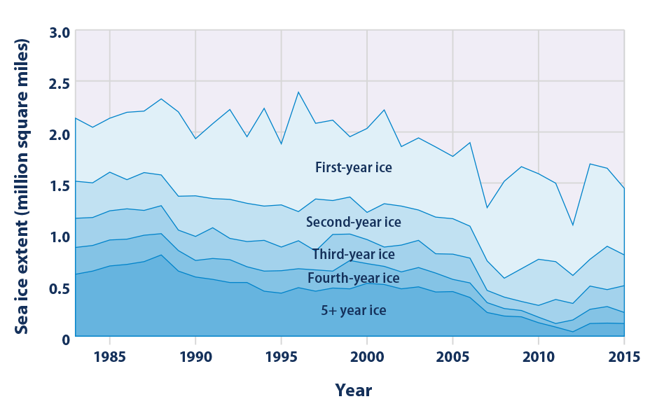
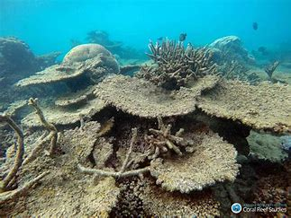
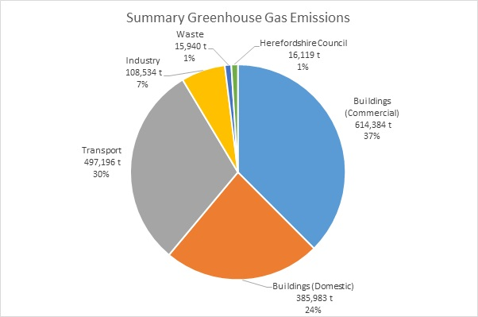

What is Climate Change?
Climate Change is refers to a long-term shifts in temperatures and weather patterns. Such drifts can be natural due to changes in the sun's activity.
Rising Global Temperatures
The Earth's warming trend isn't just a small fluctuation—it's a long-term shift that coincides with the increase in greenhouse gas emissions. Since the Industrial Revolution, human activities have released massive amounts of carbon dioxide (CO₂) into the atmosphere, primarily from burning coal, oil, and gas. This has trapped heat and caused a steady increase in global temperatures, leading to more frequent heatwaves and unpredictable weather patterns.
Melting Ice and Rising Sea Levels
Satellite data shows that ice sheets in Greenland and Antarctica are losing hundreds of billions of metric tons of ice each year. This melts into the ocean, raising global sea levels at an accelerating pace. Coastal cities around the world—including New York, Miami, and Jakarta—are already experiencing flooding due to rising seas. Scientists warn that if current trends continue, entire island nations could disappear by the end of the century.
Changes in Wildlife and Ecosystems
Climate change disrupts ecosystems by altering migration patterns, breeding cycles, and food availability. Coral reefs, for instance, are suffering from coral bleaching due to rising ocean temperatures. If the reefs die, countless marine species that rely on them will struggle to survive. Similarly, plants and animals are being forced to migrate to cooler regions, which can lead to imbalances in ecosystems.
Greenhouse Gas Emissions
The increase in CO₂ and other greenhouse gases (like methane and nitrous oxide) is unprecedented in Earth's history. The excess gases act like a blanket, trapping heat and preventing it from escaping into space. Scientists measure these emissions using ice core samples, which reveal historical CO₂ levels going back hundreds of thousands of years. The dramatic spike in greenhouse gas concentrations since the 1800s directly correlates with human industrial activity.
Scientific Consensus
Thousands of climate scientists across the world agree that human activity is the primary driver of modern climate change. Organizations like NASA, NOAA, and the IPCC have gathered extensive research, combining data from satellites, ground-based measurements, and historical records. The overwhelming agreement among scientists is that urgent action is needed to mitigate the worst effects of climate change.